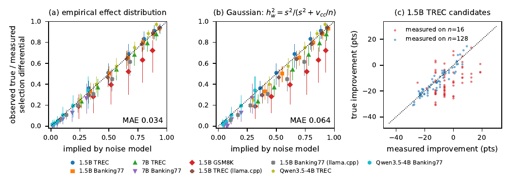
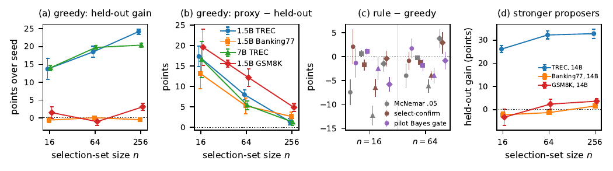
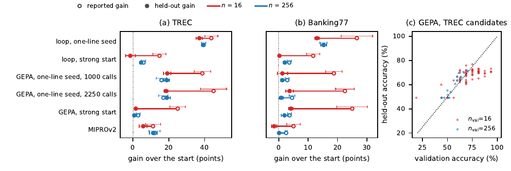

TL;DR : toute boucle « propose → score sur un petit set → garde si meilleur » surestime structurellement son propre gain, d'une quantité que la théorie de la sélection sous bruit prédit quantitativement ; les correctifs côté règle d'acceptation échouent en run complet, le seul correctif démontré est un audit set jamais utilisé pour sélectionner.
Claim principal, précisément : (i) sur des boucles où des Qwen réécrivent leur propre instruction, après la première réécriture seulement 4 à 39 % des propositions améliorent l'incumbent (effet held-out moyen −0,2 à −13,5 pts) [Tab. 2] ; (ii) le score de sélection final d'une boucle greedy dépasse l'accuracy held-out de 13 à 20 pts avec n=16 items de sélection et de 1 à 5 pts avec n=256, en étude pré-enregistrée, 4 settings × 8 seeds [§5.3, Tab. 1 H2, Tab. 3] ; (iii) la même surestimation apparaît dans les scores de validation de GEPA (+26,5 pts d'overstatement à n_val=16) et MIPROv2 (+6,6 pts) [Tab. 9, Tab. 12] ; (iv) aucune des règles d'acceptation testées (McNemar, PACE, select-then-confirm, gate bayésien calibré sur pilote) ne bat greedy sur des runs entiers — le gate pilote finit 2,1 ± 1,1 pts sous greedy (p=0,062, 32 paires) [Tab. 1 H4] ; (v) scorer l'instruction de départ et l'instruction courante sur 64 items jamais utilisés pour la sélection (128 évals, 1/10 du budget nominal à n=16) annule le biais moyen du gain rapporté et fait passer la RMSE de 15,5 à 5,7 pts [§6, Tab. 7].
⚠️ Le papier est explicitement un papier de diagnostic + protocole de reporting, pas un papier de remède : les auteurs écrivent « we therefore do not recommend the tested rules as a general remedy for adaptive reuse » [§6].
CogComp/trec), Banking77 (13 069 items, 77 intents, PolyAI/banking77, CC-BY-4.0), GSM8K (8 792 items, openai/gsm8k config main, MIT) [App. B « Data and licenses »].task-s-i ;
2. gold set exploratoire = 600 premiers items après shuffle Random(1234) ;
3. gold set confirmatoire = 600 premiers items du reste re-shufflé avec Random(2027), disjoint du premier ;
4. selection pool = pool privé des deux gold sets ;
5. par run de seed r : Random(r) tire d'abord le feedback pool de 256 items (design confirmatoire), puis un ordre fixe du reste dont les n premiers items forment le selection set → selection sets emboîtés entre les n pour un seed donné ;
6. GEPA/MIPROv2 : shuffle Random(1000+r), 256 premiers = training pool, n_val suivants = validation set (emboîté en n_val).<<< >>> complet, ≤ 180 mots ; propositions invalides ou dupliquées remplacées par des échantillons frais (3 tours en exploratoire, 5 en confirmatoire). Malgré cela, certaines générations ont < K=4 candidats valides : 26,0 % (1.5B vLLM), 25,8 % (GSM8K), 0,0 % (7B), 39,3 % (1.5B llama.cpp) en exploratoire, 6,6 % en confirmatoire [App. B ; part par arm en Tab. 3].⚠️ Ce n'est pas un env RL. C'est une boucle d'auto-amélioration single-turn, dont l'« espace d'action » est la réécriture d'une instruction. Je décris le harness tel quel car la structure de décision est ce qui est transférable.
Possible labels: ABBR:abb, ABBR:exp, … (all labels)Question: {question}Label:(Banking77 : « Possible intents » / « Customer message » / « Intent » ; GSM8K : « Question: {question} »).
« A small language model is given the following INSTRUCTION as its system prompt and then solves one task input. TASK: {task description}. CURRENT INSTRUCTION: <<<{artifact}>>>. Here are inputs where the model made mistakes with the current instruction: {4 failures: input, model output, correct answer}. Write an improved INSTRUCTION that will make the model more accurate on this task in general (not only on these examples). You may add strategies, rules, definitions, or output-format requirements. Keep it under 120 words. Return only the new instruction between <<< and >>>. » System message : « You are an expert prompt engineer who improves instructions for a smaller language model ».
####, sinon après « answer is », sinon dernier nombre. Côté DSPy, une réponse non parsable compte comme fausse — et un échec d'appel LM compte aussi comme une mauvaise réponse (cf. §5, bug des 1024 file descriptors).Ici l'« algorithme » n'est pas un optimiseur de policy mais la règle d'acceptation. C'est le cœur du papier et la partie à lire.
Hypothèse 1 (modèle gaussien de sélection) : conditionnellement à l'historique et à un selection set frais, Δ_k ~iid N(µ, s²) et Δ̂k = Δ_k + c + η_k, avec erreur partagée c ~ N(0, e_c²) (tous les candidats affrontent le même incumbent sur les mêmes items) et erreurs idiosyncratiques η_k ~iid N(0, e_η²). - µ = proposal bias (effet vrai moyen d'une proposition), s = proposal spread. - Identification depuis les vecteurs d'items : e² = e_c² + e_η² = v/n et e_η² = v_cc/n, avec v_cc = ½ E Var_x[r(c'_j,x) − r(c'_k,x)]. - σ_w² = s² + e_η², h_w² = s²/σ_w², κ_K = E max Z_k (κ_4 ≈ 1,03, κ_16 ≈ 1,77 ; l'approximation √(2 ln K) donne 1,67 pour K=4 et ne vaut qu'à grand K).
Proposition 1 (differential de sélection et overstatement) : E[Δ_k̂ − Δ̄ | Δ̂] = h_w²(Δ̂_k̂ − m̄), E[Δ̂_k̂ − m̄] = σ_w κ_K, donc le differential vrai est h_w² σ_w κ_K (équation du breeder R = h²S quand e_c = 0), et E[Δ̂_k̂ − Δ_k̂] = (1 − h_w²) σ_w κ_K + E[c] (éq. 2) avec E[c] = 0 sur un set frais. Preuve en [App. A]. ⚠️ Nuance que le papier souligne lui-même : la proposition décrit le meilleur candidat mesuré avant tout filtre d'acceptation. Conditionner sur l'acceptation augmente le biais quand la plupart des propositions sont nuisibles : pour un candidat unique d'effet vrai −e et de bruit N(0,e²), l'erreur inconditionnelle est nulle mais l'erreur moyenne d'un candidat accepté vaut e·φ(1)/(1−Φ(1)) ≈ 1,53 e [§3.1].
Proposition 2 (commit bayésien myope) : avec (µ, s², e_c², e_η²) connus, la règle qui maximise l'amélioration vraie espérée d'une génération commit le candidat de plus grande moyenne a posteriori E[Δ_k | Δ̂] = µ + h_w²(Δ̂_k − m̄) + h_w²σ_w²/(σ_w² + K e_c²) (éq. 3), ssi elle est positive. Avec bruit indépendant (e_c = 0) et s > 0, cela se réduit à un seuil sur le gain mesuré : Δ̂_k̂ > τ★ = −µ e²/s². Greedy (τ = 0) n'est optimal que si µ = 0 ; un test à niveau fixe utilise τ = z_α e quels que soient µ et s [§3.2].
Proposition 3 (régime non résolvable, sets frais) : avec s = 0 et µ < 0, greedy commit avec probabilité p = Pr[c + e_η max_k Z_k > |µ|], croissante en K et décroissante en n ; la performance held-out dérive de −|µ|p par génération pendant que chaque commit rapporte un gain positif [§3.3]. C'est le Goodhart regressionnel.
Lock-in (mécanisme, pas théorème) : sur un set réutilisé, l'erreur d'un gain mesuré = erreur du candidat − erreur de l'incumbent ; l'erreur de sélection positive de l'incumbent entre donc dans chaque gain mesuré avec un signe négatif → seuil implicite. « the fresh-set model does not identify its net size on reused items » [§3.3]. À garder : greedy sur set réutilisé est plus conservateur qu'il n'en a l'air.
Toutes choisissent le meilleur candidat mesuré (ou la plus grande moyenne a posteriori) et ne diffèrent que sur quand committer : - Greedy : Δ̂_k̂ > 0. - McNemar : test exact unilatéral contre l'incumbent au niveau α (non corrigé du choix parmi K). - PACE [pace2026] : test anytime-valid publié, mise fixe λ = ½ sur chaque item discordant, commit quand la richesse atteint 1/α (α = 0,05) ; exige au moins 8 victoires de plus que de défaites, « which a 16-item set rarely provides » [App. B]. - Select-then-confirm : choisir sur une moitié de D, committer ssi le gagnant bat aussi l'incumbent sur l'autre moitié. - Baselines tunées : α de McNemar, ou seuil sur Δ̂_k̂, maximisant la valeur sur des runs pilotes (α tuné = 0,2–0,5 sur TREC, 0,01 sur Banking77 [App. C]). - Bayes gates : éq. 3 avec ê_η² = v̂_cc/n et ê_c² = (v̂ − v̂_cc)/n estimés sur les vecteurs d'items de la génération courante ; commit ssi la plus grande moyenne a posteriori et le gain mesuré sont tous deux positifs. Variante pilot-calibrated ((µ, s²) d'un run pilote oracle, prior indexé par phase : génération 1 vs suivantes) et variante online (estimés sur l'historique du run). - Valeurs gelées du prior pilote, en points, (µ, s) pour génération 1 puis suivantes [App. B] : (5,6 ; 8,6) et (−9,4 ; 7,1) pour 1.5B TREC ; (−6,8 ; 6,1) et (−4,6 ; 5,1) pour 1.5B Banking77 ; (4,9 ; 4,8) et (−7,2 ; 7,2) pour 7B TREC ; (−7,7 ; 5,1) et (−2,8 ; 7,6) pour 1.5B GSM8K. - Honnêteté méthodologique notable : « The level of a McNemar or PACE test holds for one fixed candidate on fresh items. Choosing the best of K candidates before testing and reusing the items across generations both void that guarantee, so we compare rules by the held-out value of their decisions rather than by their nominal error rates » [§4].
K = 4 candidats/génération ; n ∈ {16, 32, 64, 128, 256} ; T = 20 (vLLM) / 25 (llama.cpp) ; proposer à température 0,9, top-p 0,95, ≤ 400 nouveaux tokens ; solver greedy decoding ; seeds 11–18 en confirmatoire (8 seeds), 5 seeds pour les arms 14B, 4 seeds (puis 4 ajoutés) pour Qwen3.5-4B ; GEPA : budget 4000 metric calls, reflection_minibatch_size = 3, fenêtre de contexte 32768 pour le reflection model, thinking désactivé ; MIPROv2 : instruction-only, 16 instructions proposées, 24 essais d'optimisation bayésienne [App. B]. KL, clipping, advantage, LR : sans objet (pas de gradient).
- Allocation K × n à budget fixe B = 256 évals/génération : différences dans la variation de seed ; pour 7B les extrêmes (K=1 et K=16) sont les pires, « consistent with an interior optimum, but the sweep is too small to be conclusive » [Tab. 17]. Sweep llama.cpp antérieur : 16,7 / 13,9 / 24,2 / 14,6 pts pour (K,n) = (1,256), (2,128), (8,32), (16,16) — non concluant.
Voir §6.
| Étude | n | gén. 1–3 | gén. 4–10 | gén. 11–20 |
|---|---|---|---|---|
| exploratoire | 16 | 9,4 | 13,3 | 16,5 ± 2,6 |
| exploratoire | 64 | 3,7 | 5,3 | 7,3 ± 1,7 |
| exploratoire | 256 | 1,6 | 2,1 | 2,5 ± 0,7 |
| confirmatoire | 16 | 7,6 | 11,8 | 13,6 ± 1,7 |
| confirmatoire | 64 | 3,6 | 5,9 | 7,2 ± 1,1 |
| confirmatoire | 256 | 0,0 | 0,7 | 1,7 ± 0,6 |
L'inflation monte avec le temps et décroît en 1/√n. Dans les runs oracle vLLM, la part de candidats dont l'effet mesuré sur le set réutilisé est positif tombe de 61 % (gén. 1) à 1,7 % (gén. 11–20) ; la part à effet held-out positif ne tombe que de 50 % à 16 %, et la part qui améliore de plus d'une erreur-type gold (1,8 pt) de 32 % à 2,3 % [Tab. 4 texte]. 42 % de tous les commits ont lieu dans les 3 premières générations. - Part du gain venant de la génération 1 : 38–54 % (Qwen2.5 sur TREC), 70–78 % (proposer 14B), 90–112 % pour Qwen3.5-4B — les générations ultérieures n'ajoutent rien en moyenne avec un modèle courant [App. C « Where the gains come from »]. ⚠️ Conséquence directe : plus le modèle est fort, plus la boucle se réduit à une seule réécriture, et plus tout le reste n'est que du bruit de sélection.
Chaque cas : comportement → détection → correction.
| Chiffre annoncé | Où il est annoncé | Source dans le papier | Verdict |
|---|---|---|---|
| « most proposals after the first are harmful » | abstract, §1 | [Tab. 2] : après gén. 1, 4–39 % des réécritures améliorent l'incumbent ; µ de −0,2 à −13,5 pts | confirmé |
| « the model gives the size of the winner's curse of a generation's best candidate » | abstract | [§5.1, Fig. 1] : MAE 0,034 (distribution empirique) et 0,064 (gaussien) sur 9 settings × n ∈ [8,256] | confirmé, mais sur des pseudo-splits du gold set avec des entrées oracle, pas dans une boucle native — le papier le dit [§5.1 fin, §6] |
| « With a prior from a separate pilot, it matches the average overstatement of first-generation commits in native loops, though not setting by setting » | abstract | [Tab. 5] : observé/modèle = 9,1/9,0 (n=16), 3,2/3,8 (n=64), 0,1/1,3 (n=256) ; [Tab. 6] : 1,9 vs 5,9 (1.5B TREC n=16), 12,9 vs 7,0 (Banking77) | confirmé — y compris la réserve ; à n=256 l'écart est de 1,2 pt pour une moyenne observée de 0,1, donc « matches » y est généreux (IC [−2,7 ; +0,4] contient 0) |
| « final selection-set score of greedy loops exceeded held-out accuracy by 13 to 20 points with 16 selection items and by 1 to 5 points with 256 » | abstract, §1 | [Tab. 3] greedy : gaps à n=16 = 17,3 / 13,2 / 16,6 / 19,6 ; à n=256 = 1,4 / 2,7 / 1,3 / 4,9 | confirmé (bornes exactes 13,2–19,6 et 1,3–4,9) |
| « Held-out gains grew with the selection set on TREC but not on GSM8K » | abstract | [Tab. 1, H1] : 1.5B TREC +10,5 ± 2,6 (p=0,010), 7B TREC +6,4 ± 0,7 (p<0,001), GSM8K +1,6 ± 2,2 (p=0,483) | confirmé. ⚠️ Banking77 n'a pas de ligne H1 : la dichotomie « TREC oui / GSM8K non » tait un troisième cas où le gain est nul partout (−0,6 à −0,5 pts, [Tab. 3]) |
| « the tested acceptance rules did not beat greedy acceptance over whole runs » | abstract | [Tab. 1, H4] gate pilote − greedy = −2,1 ± 1,1 pts (p=0,062, 10 victoires/32) ; [H5] select-confirm − greedy = −1,6 ± 1,2 (p=0,194) ; McNemar à niveau fixe −7,4 et −12,3 pts sur TREC | confirmé, et même en-deçà de la réalité : les règles sont pires, pas seulement « pas meilleures » |
| « in the validation scores of GEPA and MIPROv2 it reaches 26 and 7 points with 16 validation items » | §1 | GEPA : overstatement +26,5 ± 6,9 (TREC, n_val=16, 2250 calls) [Tab. 9] ; MIPROv2 : +6,6 ± 3,3 (Banking77, n_val=16) [Tab. 12] | confirmé au arrondi près (6,6 → « 7 »), mais ce sont deux tâches différentes : le chiffre MIPROv2 sur TREC est 5,5 ± 2,6 |
| « Scoring the starting and the current instruction on 64 items never used for selection removes the average bias of a loop's reported gain, but single estimates remain off by about 6 points » | abstract | [Tab. 7] audit 64 items : biais −0,0 / −0,1 / −0,0 et RMSE 5,7 / 6,3 / 6,7 pts pour n = 16 / 64 / 256 | confirmé |
| « 13 to 20 points … 1 to 5 » (overstatement en strong start : 16,3 → 1,4 et 11,5 → 1,5) | §5.4 | [Tab. 8] + texte §5.4 | confirmé mais ⚠️ sur-généralisé dans la présentation : 8 seeds dont 4 ajoutés après avoir vu les résultats des 4 premiers ; les auteurs qualifient eux-mêmes les p-values combinées d'« exploratoires » |
| « GEPA's held-out gain still did not grow with n_val » (18,5 / 20,4 / 19,0 à 2250 calls) | §5.4 | [Tab. 9] | confirmé, mais vrai à budget de metric calls apparié seulement — l'arm 16 items fait 107 appels de réflexion contre ≤ 10 pour 256 items [App. C] : c'est un réglage, pas un résultat général |
| « 28 rented GPU-hours » | App. B | — | confirmé (déclaratif, non vérifiable) |
Verdict global de cohérence : cohérent. Aucun chiffre introuvable, aucune contradiction abstract ↔ texte ↔ tableaux. Les seules réserves sont des sur-généralisations de présentation que les auteurs signalent eux-mêmes ailleurs dans le papier.
Runs greedy pré-enregistrés — gain held-out final et écart proxy − held-out [Tab. 3] :
| Setting | n=16 gain / gap | n=64 gain / gap | n=256 gain / gap | commits nuisibles (n=16 / 64 / 256) |
|---|---|---|---|---|
| 1.5B TREC | +13,7 ± 2,9 / +17,3 ± 2,5 | +18,5 ± 1,5 / +8,0 ± 1,2 | +24,2 ± 0,7 / +1,4 ± 0,8 | 4/22 · 8/35 · 8/46 |
| 1.5B Banking77 | −0,6 ± 0,7 / +13,2 ± 3,7 | +0,0 ± 0,5 / +5,3 ± 1,9 | −0,5 ± 0,5 / +2,7 ± 1,1 | 5/12 · 6/15 · 12/21 |
| 7B TREC | +14,0 ± 0,7 / +16,6 ± 4,4 | +19,8 ± 0,5 / +5,4 ± 1,1 | +20,4 ± 0,6 / +1,3 ± 0,8 | 3/19 · 5/34 · 16/54 |
| 1.5B GSM8K | +1,5 ± 1,7 / +19,6 ± 4,5 | −1,1 ± 1,1 / +12,2 ± 2,2 | +3,1 ± 1,0 / +4,9 ± 1,0 | 7/16 · 15/27 · 13/29 |
Optimiseurs de prompts instrumentés, overstatement du gain rapporté [Tab. 9, Tab. 10, Tab. 12] :
| Système | Tâche | n_val | gain rapporté | gain held-out | overstatement |
|---|---|---|---|---|---|
| GEPA, 1000 calls | TREC | 16 | +38,8 ± 4,6 | +19,2 ± 2,0 | (inflation +14,1) |
| GEPA, 1000 calls | TREC | 256 | +15,9 ± 2,9 | +18,9 ± 1,5 | (inflation −4,5) |
| GEPA, 2250 calls | TREC | 16 | +45,0 ± 7,2 | +18,5 ± 1,2 | +26,5 ± 6,9 |
| GEPA, 2250 calls | TREC | 256 | +17,0 ± 2,6 | +19,0 ± 1,9 | −1,9 ± 2,2 |
| GEPA, 2250 calls | Banking77 | 16 | +22,5 ± 3,2 | +3,7 ± 1,4 | +18,8 ± 2,5 |
| GEPA, strong start | TREC | 16 | +25,0 ± 4,4 | +1,6 ± 0,6 | +23,4 ± 4,1 |
| MIPROv2 | TREC | 16 | +11,2 ± 4,1 | +5,8 ± 2,1 | +5,5 ± 2,6 |
| MIPROv2 | TREC | 256 | +12,1 ± 3,1 | +11,4 ± 2,3 | +0,7 ± 1,3 |
| MIPROv2 | Banking77 | 16 | +5,0 ± 2,3 | −1,6 ± 0,9 | +6,6 ± 3,3 |
Trois estimateurs du gain d'une boucle [Tab. 7] (biais / RMSE en points, contre 300 items gold) :
| Estimateur | évals sup. | n=16 | n=64 | n=256 |
|---|---|---|---|---|
| self-report (selection set) | 0 | +10,8 / 15,5 | +6,1 / 9,0 | +1,8 / 4,7 |
| shrinkage par le ĥ_w² de la boucle | 0 | +0,7 / 10,7 | −0,7 / 7,6 | −1,4 / 5,3 |
| audit, 16 items | 32 | −0,0 / 10,7 | −0,3 / 11,9 | +0,1 / 12,3 |
| audit, 32 items | 64 | −0,1 / 7,7 | −0,2 / 8,7 | −0,0 / 9,0 |
| audit, 64 items | 128 | −0,0 / 5,7 | −0,1 / 6,3 | −0,0 / 6,7 |
| audit, 128 items | 256 | −0,1 / 4,4 | −0,1 / 4,9 | +0,0 / 5,1 |
(gain vrai moyen : 6,2 / 9,6 / 14,2 pts ; 151 / 151 / 55 runs)
Valeur d'une décision isolée sur set frais [Tab. 13], en points de held-out par décision :
| Règle | n=16 | n=64 | n=128 |
|---|---|---|---|
| Greedy keep-if-better | −0,47 [−0,82 ; −0,03] | +0,24 [−0,15 ; +0,71] | +0,50 [+0,11 ; +0,96] |
| McNemar α=0,05 | +0,06 [+0,00 ; +0,14] | +0,34 | +0,49 |
| Select-then-confirm | +0,06 [−0,09 ; +0,26] | +0,35 | +0,55 |
| McNemar, α tuné sur pilote | +0,19 [−0,02 ; +0,43] | +0,56 | +0,64 |
| Bayes gate calibré sur pilote | +0,28 [−0,03 ; +0,63] | +0,52 | +0,66 |
| Meilleur candidat (oracle) | +1,40 [+1,00 ; +1,87] | +1,48 | +1,61 |
| gate pilote − greedy | +0,77 [+0,60 ; +0,93] | +0,21 [+0,10 ; +0,30] | +0,08 [−0,00 ; +0,15] |
→ Le correctif marche décision par décision sur set frais (+0,77 pt/décision à n=16, IC excluant 0), et échoue en run complet sur set réutilisé (−2,1 ± 1,1 pts, [Tab. 1 H4]). C'est la tension centrale du papier et les auteurs l'assument : « the replay draws a fresh selection set for every decision, so it contains no lock-in » [App. C].
reproduce.py et 7 fichiers de tests livrés en ancillaires ; reconstruction exacte des états GEPA vérifiée contre les logs. Vérifié localement dans src/anc/winners_curse_supplement/.Verdict : solide pour le diagnostic, à répliquer pour le remède. Le fait central — une boucle keep-if-better surestime son propre gain d'une quantité qui décroît en 1/√n et que Prop. 1 prédit au bon ordre de grandeur — est établi par pré-enregistrement, répliqué sur deux stacks d'inférence, retrouvé dans deux optimiseurs tiers, et l'un des résultats les plus frappants des auteurs (le drift Goodhart) a été désavoué par eux-mêmes faute de réplication. ⚠️ En revanche le résultat « les règles d'acceptation ne servent à rien en run complet » repose sur 4 settings Qwen2.5 × 8 seeds avec un prior pilote dont l'estimateur gelé est reconnu légèrement faux ; et l'explication avancée (lock-in) n'est pas établie causalement — « we do not model the dynamics of lock-in » [§6].

Ce qu'il faut voir : (a)–(b) chaque point est un setting × n ; en abscisse le ratio vrai/mesuré prédit par le modèle de bruit, en ordonnée le ratio observé ; les points s'alignent sur la diagonale sur 9 settings et n ∈ [8, 256] (MAE 0,034 avec la distribution empirique des effets, 0,064 avec la gaussienne, qui surestime la fiabilité là où les effets sont à queue lourde). Donc : le facteur de shrinkage est calculable a priori, à partir de v_cc estimé sur les vecteurs d'items que la boucle journalise déjà. (c) nuage mesuré vs vrai des candidats 1.5B TREC : à n=16 (rouge) le nuage est quasi orthogonal à la diagonale — des candidats mesurés à +20 pts valent réellement −40 ; à n=128 (bleu) il se recolle. ⚠️ Rappel : les ratios sont calculés sur des pseudo-splits du gold set avec des entrées oracle, pas dans une boucle native.
Ce qu'il faut voir : (a) le gain held-out croît avec n sur TREC (bleu, vert : 13,7 → 24,2 et 14,0 → 20,4) et reste plat à zéro sur Banking77 et GSM8K — agrandir le set de sélection n'achète pas toujours du gain réel. (b) en revanche l'écart proxy − held-out s'effondre de ~13–20 pts à ~1–5 pts sur les quatre settings : c'est l'effet universel. (c) chaque règle d'acceptation moins greedy : les points sont majoritairement sous zéro à n=16 comme à n=64 — aucune règle ne bat greedy, McNemar perd jusqu'à ~12 pts. (d) avec un proposer 14B, les gains TREC montent à +26/+33 mais le phénomène (b) persiste. C'est la figure à montrer pour trancher le débat « faut-il un gate statistique dans la boucle ».
Ce qu'il faut voir : (a)–(b) pour chaque système, le segment relie le gain held-out (point plein) au gain rapporté (cercle vide) : le segment rouge (n=16) est long partout — boucle depuis un seed d'une ligne, boucle depuis un départ compétent, GEPA à 1000 et 2250 calls, GEPA depuis un bon programme, MIPROv2 — tandis que le segment bleu (n=256) est quasi nul. Le cas le plus brutal : GEPA, strong start sur TREC, +25,0 rapporté pour +1,6 réel. (c) scatter validation vs held-out des candidats TREC de GEPA : à n_val=16 (rouge) les points sont massivement sous la diagonale et s'étalent sur 40 points d'accuracy de validation pour une accuracy held-out quasi constante — la sélection trie du bruit. ⚠️ C'est la figure qui généralise le résultat au-delà des boucles maison, donc la plus citable en interne.| Ingrédient | Choix du papier | Équivalent juridique | Transfert | Ce qui manque |
|---|---|---|---|---|
| Source des tâches | 3 benchmarks publics, items i.i.d. d'un pool, splits par Random(seed), audit de duplication de texte a posteriori [App. B] |
Items Harvey LAB / Vals Legal Research Bench + tâches internes ; questions voisines par juridiction et domaine, donc dépendance entre items | adaptable | les items juridiques ne sont pas i.i.d. : grappes par juridiction, par matière, par cabinet-client. Toutes les variances du papier (v/n) supposent i.i.d. → il faut un bootstrap par grappe, pas par item, ce que le papier ne fait que pour les générations |
| Vérifieur | exact match déterministe, erreur-type gold de 1,5–2 pts sur 600 items [§5] | juge LLM sur rubrique, ou vérification de citations ; pas de vérité exacte, réponses longues | non (en l'état) — et c'est le point dur. Le papier dit explicitement que du bruit stochastique par item candidate-specific prédit un winner's curse plus grand [§6] | il manque toute mesure de v et de v_cc sous juge LLM. Avant de transposer le moindre seuil, il faut mesurer le taux de désaccord juge↔juge et juge↔humain sur les items discordants entre deux candidats — c'est la seule quantité dont le modèle a besoin |
| Harness / outils | aucun outil, solver single-turn, décodage greedy, parsing fixe ; échecs montrés au proposer tirés d'un pool de feedback séparé du set de sélection [§5.3] | agent de recherche juridique multi-turn avec retrieval, citations, outils | direct pour une chose : séparer le pool de feedback du set d'évaluation. C'est gratuit et ça supprime un confound majeur | rien à transposer du harness lui-même |
| Algo | règle d'acceptation (greedy / McNemar / PACE / select-then-confirm / Bayes gate τ★ = −µe²/s²) ; aucune ne bat greedy en run complet [Tab. 1] | gate de promotion d'un checkpoint RL / d'un prompt système / d'un scaffold | adaptable, mais en négatif : ne pas mettre de gate statistique dans la boucle d'optimisation, le mettre à la sortie | le papier ne teste aucun gate de sortie (ship/no-ship sur borne basse). Son audit est un estimateur, pas une règle de décision — l'extrapolation est à moi, pas à lui |
| Curriculum | aucun ; resolution matching (n croissant avec les générations pour tenir ĥ_w² constant) testé en exploratoire seulement, meilleur gain TREC à budget fixe [Tab. 18] | évaluer les candidats précoces sur peu d'items, les finalistes sur beaucoup | adaptable — c'est le bon schéma de dépense (successive halving guidé par ĥ_w²), mais evidence faible : 3 seeds, un stack, exploratoire | |
| Anti-hacking | pas de hacking comportemental ; anti-hacking statistique = audit set jamais utilisé pour sélectionner, scoré uniquement pour le point de départ et le candidat final [§6, Tab. 7] | audit set juridique gelé, scoré uniquement au gate de promotion | direct | le coût : avec un juge LLM, 64 items × 2 ne suffiront pas. Le papier dit déjà que « resolving gains of a few points would take a few hundred items » aux taux de désaccord de ses tâches [§6] — et ses tâches sont moins bruitées qu'un juge |
À distinguer nettement, c'est la question posée :
La séparation stricte entre set de sélection et set d'audit, et le reporting obligatoire du gain held-out avec son erreur-type. Raison : c'est le seul élément non biaisé par construction (il ne dépend ni du prior, ni de la gaussianité, ni de l'absence de lock-in) ; il coûte 1/10 du budget d'évaluation ; et il attaque directement le mode d'échec déjà observé dans mon corpus (gain de 45 % sur 20 tâches, nul sur 89 — soit exactement le profil « inflation à petit n » de [Tab. 3]). Corollaire tout aussi important à transposer : ne pas remplacer greedy par un gate statistique à l'intérieur de la boucle — c'est le réflexe naturel et le papier le réfute sur son seul test pré-enregistré.
Dérivée du papier, avec la part qui est extrapolée signalée.
Phase 0 — instrumentation (prérequis, sinon rien de ce qui suit n'a de sens). Journaliser le vecteur d'items (score par item, pas seulement l'agrégat) de chaque candidat et de l'incumbent. Le papier en tire tout : q̂k (taux de discordance), v̂ = moy_k max{q̂_k − Δ̂_k², 1/n}, v̂_cc = min{v̂, ½ moy max{q̂_{jk} − (Δ̂_j − Δ̂_k)², 1/n}} [App. B]. Sans vecteurs d'items, aucun diagnostic n'est possible.
Phase 1 — dans la boucle : garder greedy, mais ne jamais croire le chiffre. - Sélection : meilleur candidat mesuré, commit si Δ̂ > 0, sur le set de sélection réutilisé. Ne pas poser de gate McNemar/bayésien [Tab. 1 H4/H5 ; Tab. 3 McNemar −7,4 / −12,3 sur TREC]. - Un garde-fou, lui, est gratuit et justifié par un failure mode observé : ne jamais committer un candidat qui mesure comme une régression, quelle que soit la sortie du posterior [App. C, effondrement du gate EB]. - Échecs montrés au proposer : tirés d'un pool de feedback disjoint du set de sélection et de l'audit [§5.3]. - Reporter à chaque commit le gain mesuré shrinké par ĥ_t = ŝ²/(ŝ² + v̂_cc/n), avec ŝ² = max(spread intra-génération − v̂_cc/n, 0) [App. C « Estimating the winner's curse »] — coût nul, retire le biais moyen, à présenter comme indicatif seulement (erreur résiduelle −8,5 à +5,8 pts par setting).
Phase 2 — au gate de promotion : la règle qui décide. 1. Un audit set gelé, tiré avant tout entraînement, jamais utilisé pour sélectionner, filtrer, choisir un checkpoint ou montrer un échec au proposer. Dédupliqué par texte et non seulement par ID, avec rapport du nombre de collisions (le papier en trouve 12 sur TREC malgré une séparation par ID propre [App. B]). 2. Scorer sur cet audit exactement deux artefacts : le point de départ (modèle en production) et le candidat final. Pas les intermédiaires — chaque artefact scoré supplémentaire rouvre la sélection sur l'audit. 3. Calculer le gain apparié item par item (pas la différence de deux accuracies séparées) et son erreur-type sur les items discordants : se(Δ̂) = √(v̂/n_audit) avec v̂ = q̂ − Δ̂² [§3]. 4. Critère de promotion : Δ̂_audit − z·se(Δ̂_audit) > 0, soit la borne basse de l'intervalle, avec z fixé par le coût d'une régression en production (z = 1,65 pour un unilatéral à 5 %). ⚠️ Cette borne basse comme critère de sortie n'est pas testée dans le papier — ce qu'il démontre, c'est que l'audit est non biaisé et que sa RMSE est de ~5,7 pts à 64 items [Tab. 7] ; la transformer en règle de décision est mon extrapolation. Elle est cohérente avec Prop. 2 (τ★ = −µ e²/s² > 0 dès que µ < 0, c'est-à-dire dès que la plupart des candidats nuisent) mais le papier montre qu'une telle règle coûte des gains quand on l'applique dans la boucle. Ne l'appliquer qu'une fois, en sortie. 5. Dimensionner n_audit par le taux de discordance, pas par habitude : pour détecter un gain de δ points il faut n ≈ z²·q/δ². Repère du papier : à ses taux de désaccord, résoudre des gains de quelques points demande « a few hundred items » [§6]. Avec un juge LLM, ajouter la variance du juge à q. 6. Reporter systématiquement trois chiffres, jamais un seul : score de sélection, score d'audit, et leur écart (= inflation). C'est la recommandation littérale des auteurs : « self-improvement studies should report held-out gains with their uncertainty » [abstract, §6].
Phase 3 — ce qui n'est pas tranché et qu'il faut mesurer soi-même. Le papier ne dit pas combien d'évaluations par candidat allouer (sweep non concluant [Tab. 17]), ni si un set frais à chaque génération aide (il nuit dans le seul setting testé [App. C]), ni comment tout cela se comporte avec un vérifieur bruité.
Mesurer v et v_cc sous juge LLM sur un gate juridique, et en déduire n_audit. Protocole : prendre 2 à 4 candidats réels (variantes de prompt système ou checkpoints RL voisins) et l'incumbent ; les scorer tous sur ~300 items Harvey LAB / Vals avec le juge de production ; journaliser les vecteurs d'items ; calculer (a) q̂ = taux de discordance candidat↔incumbent par item, (b) v̂ = q̂ − Δ̂², (c) v̂_cc = ½ Var_x[r(c'_j,x) − r(c'_k,x)] donc la part d'erreur partagée (le papier trouve v_cc/v ≈ 0,44–0,60 [Tab. 2]), (d) la part de v attribuable au juge seul, en re-jugeant 3 fois les mêmes paires (analogue du re-scoring H100 du papier [App. B]). Puis : n_audit = z²q̂/δ² pour le δ qu'on veut pouvoir défendre. Résultat attendu : v nettement supérieur aux 0,03–0,2 du papier à cause du bruit de juge, donc un n_audit de l'ordre de plusieurs centaines d'items pour résoudre 2–3 points — c'est-à-dire que les suites d'éval juridiques actuelles sont probablement sous-dimensionnées d'un ordre de grandeur pour un gate de promotion, et que ce qu'on appelle « gain » à 20 ou 50 items est en grande partie du differential de sélection. Coût : quelques centaines d'appels de juge, pas de GPU d'entraînement. C'est l'expérience la moins chère et la plus décisive du corpus.
Deux, liées : 1. « Nos items d'éval juridique sont-ils, à un moment quelconque du pipeline, utilisés à la fois pour sélectionner et pour rapporter ? » — choix de checkpoint, early stopping, sélection de prompt système, filtrage de données, choix de mélange RL, ablations. Chaque usage de sélection transforme le score rapporté en score de validation d'optimiseur, et [Tab. 9] montre ce que ça coûte : GEPA rapporte +45,0 pour +18,5 réel. La réponse attendue est « oui, plusieurs fois », et c'est le point d'entrée du protocole. 2. « Quel est le taux de désaccord de notre juge sur les items où deux candidats diffèrent ? » — pas son accord global avec des humains, mais sa variance sur les items discordants, qui est la seule qui entre dans v. Si personne ne connaît ce chiffre, aucun gain rapporté sur Harvey LAB ou Vals n'a d'erreur-type défendable.